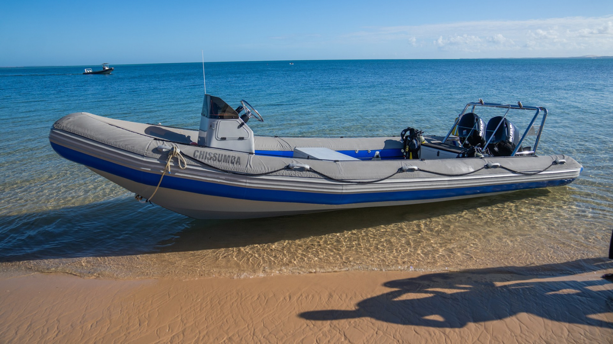

Record petrol consumption, trip operations and fuel-based emissions.
MODULE / 03
From the deck to the
climate check.
Direct fuel combustion for CO₂e emissions.
Understanding Boat emissions
Click to expand.

MODULE VISUAL
Boat records
Direct fuel combustion as the only source of CO₂e emissions.
01 / INTRODUCTION
Why boats?
Boats are a common operational transport mode in our seascapes (e.g. Benguerra, Mozambique; Mnemba, Tanzania).
They are often used for diving, transfers, BRUVS, sand collection, etc. and can be a significant source of
fuel-based emissions. This module allows us to record the petrol consumed by the entire boat during a journey
and calculate the associated CO₂e emissions.
02 / PURPOSE
Why calculate them?
Marine vessels consume fuel during operations, releasing carbon dioxide and other greenhouse gases into the atmosphere.
Monitoring and reporting these emissions allows us to quantify the contribution of boat operations to our overall
carbon footprint, identify opportunities for fuel efficiency and make informed decisions about operational planning,
maintenance and changes in fuel-use over time.
03 / METHODOLOGY
How do we calculate emissions?
Boats emissions are calculated based on the recorded petrol consumption (in litres) and the UK DESNZ 2026 fuel factors
for mineral petrol. Where the measured fuel consumption is unknown, the fuel used may be estimated based on engine
operating hours and known fuel consumption rates (litres/hour). Estimation may incorporate assumptions about the
operating speed, load, vessel characteristics, and engine specifications where reliable information is available.
Fuel measurements are preferred because engine specifications and operating conditions cannot accurately describe
consumption under real-world conditions.
04 / INTERPRETATION
How should results be read?
Results are presented in terms of total CO₂e emissions as well as CO₂, CH₄, and N₂O contributions generated by the fuel
consumed during a recorded boat operation. Higher emissions generally indicate greater fuel use, which may be associated
with longer operating periods, larger engines, higher speeds, or heavier loads. However, emissions alone do not indicate
whether a trip was necessary or avoidable. Where fuel consumption is estimated, the results should be interpreted with caution,
as they may not accurately reflect the actual fuel use and emissions of the boat operations.
Loading tracker reference data…
Checking browser storage
Saved in this browser only · Back up before switching devices or clearing site data.
01 / WATER TRANSPORT
Boat emissions
Enter the petrol consumed by the entire boat during the journey. Keep the trip particulars for
monitoring, while emissions are calculated from litres alone.
UK DESNZ 2026 · direct fuel combustion
02 / SUMMARY STATS
Flight totals
Total flight emissions
0.000
t CO₂
Flight legs
0
records
Passenger journeys
0
travellers
Route distance
0
km
Charging emissions
0.000
t CO₂
CO₂ avoided
0.000
t CO₂
Electric distance
0
km
Recording periods
0
records
Total CO₂e
0.000
t CO₂e
Boat petrol consumed
0
litres
Recorded journeys
0
trips
Engine hours logged
0
hours · where provided